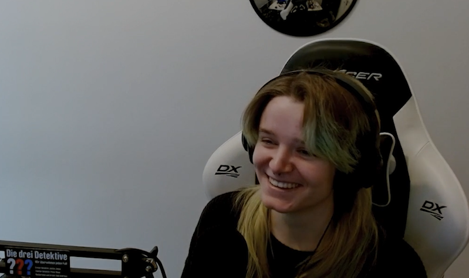

V
V: Also ich bin V. Ich studiere derzeit in Berlin
Game Design an der HTW Berlin. Generell mache ich Game Design.

Also ich
entwickle Spiele. Nebenbei bin ich aber auch recht so im
illustratorischen Animationsspektrum, das ist so what i do i´d say!
Klaus Neuburg
Ich bin Klaus Neuburg. Professor, hier an der Ostfalia für Mediendesign mit Schwerpunkt interaktive Medien. Außerdem habe ich ein kleines Büro mit einem Kompagnon für Grafik und Interaktionsdesign. Serve and Volley Studio in Köln und Karlsruhe und bin Teil von Froh e.V., einer Medien NGO, die es seit zehn Jahren jetzt gibt.
B12
Fiona Gebhardt: Ich bin Fiona Gebhardt. Ich bin bei der Designagentur Studio B12 die KI Beauftragte, KI Thinkerin nennen wir das beziehungsweise AI Thinkerin. Ich bin hier verantwortlich dafür, Recherche zu betreiben und KI im Unternehmen und in den Projekten zu integrieren und zu gucken, was hier für uns sinnvoll ist.
Peter Werner: Mein Name ist Peter Werner, Ich bin Geschäftsführer von Studio B12 und sorge dafür, dass Fiona tun kann, was sie gerade beschrieben hat.
Albert Radl
Ich bin der
Albert Radl. Ich bin
Stop Motion Animator und
Illustrator.

Ich habe jahrzehntelang
von Storyboard gelebt, zu zeichnen und ihr interviewt mich, glaube ich, anlässlich dessen, dass ich euch schon mal gesagt habe, dass der Beruf, des
Storyboarders akut in Gefahr ist.
Fabio Kolligs
Ich bin Fabio Kolligs. Ich habe einen Bachelor in Computer Science an der Ruhr Uni Bochum gemacht. Mache in meiner Freizeit gerne Game Developement. Hab mir das größtenteils selber beigebracht und momentan arbeite ich bei Netzwerkplan und helfe da den 3D Webviewer für Architekturvisualisierung zu programmieren und suche aber auch nebenbei noch einen Job in der Spieleindustrie, weil ich da gerne arbeiten würde.